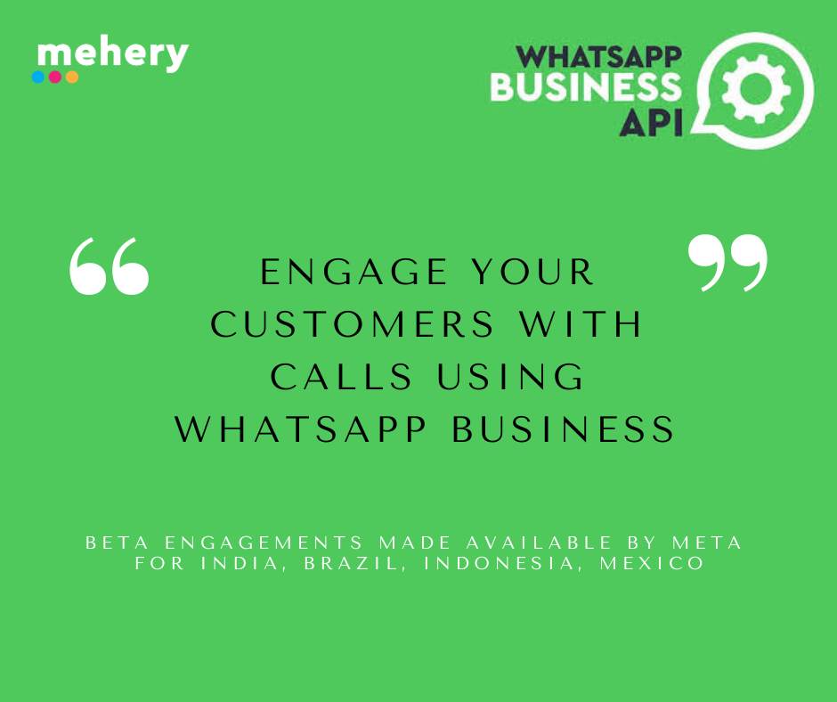

🎙️WhatsApp Business Calling API: The Big Picture
By Kershasp Carnac on June 12, 2025
If you're scratching your head wondering what this new WhatsApp stunt is all about—think of it as the missing puzzle piece in WhatsApp Business. It's where business chat meets real-time voice calls, all within the same window you're already using. No app-switching, no phone dialling—just one tap, and you’re talking to a real agent.
Broadway has musicals, WhatsApp has messages. Now, add voice calls—and voilà, you’ve got a customer experience masterpiece.
Why Your Customer's Will Actually Enjoy It
Zero-hassle, full convenience
Ever tried typing a long complaint and gave up? Ever tried talking to a BOT on WhatsApp and giving up? With voice calling, you just press the call icon and speak. No more awkward typing sprees. With Mehery, the agent sees a session summary and where you were stuck, allowing for a rapid fire solution to a bugging issue.
Fix issues pronto
Imagine undertaking an onboarding journey and getting stuck on page 3. With Mehery, the business can understand where you are stuck, trigger a WhatsApp video tutorial and if you still need to talk to an agent - you call support from inside the WhatsApp chat and fix it in minutes. Fast solutions, no hold music.
A human touch
Big-ticket purchases? Sales support? Don't want to text? Call the business on WhatsApp. Your relationship manager or a sales agent will seamlessly move between text and voice and help you with your requirements. Send documents on WhatsApp text and converse on voice. Voice and text flow better, trust builds faster, and hello—goodbye sales anxiety.
The How-To: A Peek Under the Hood
✅ Incoming and Outgoing Calls
🛠️ Deep-Links FTW
Embed special call-links on web pages or apps to direct customers straight to the right team or specialist. No guessing, no wait.
🧹 Seamless Integration
Think you need separate systems? Nope. This plugs right into existing VoIP/SIP setups (via web RTC). PSTN support? Not yet. But messaging and voice flow together.
Use Case Cheat Sheet
| Scenario | Why It Matters |
|---|---|
| Customer Support | Smooth chat to call transitions in the same thread. Keeping the context intact = fewer headaches. |
| Sales & Lead Gen | Big purchases? Let people chat and talk. Boosts confidence, accelerates deals. |
Beta & Rollout Plans
🔍 FAQs at a Glance
Why This Matters
Final Verdict
This isn’t just another API. It’s a strategic leap toward fully conversational commerce—where chat, voice, and trust all come together in one seamless, always-on interaction. And that, my friends, is how you turn messaging apps into experience engines.
Contact us at sales@mehery.com to get us involved in your success.